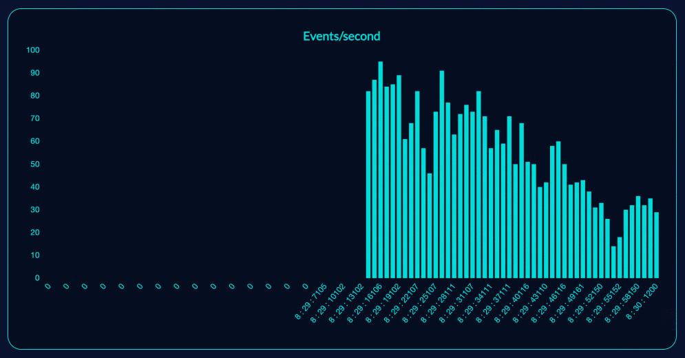
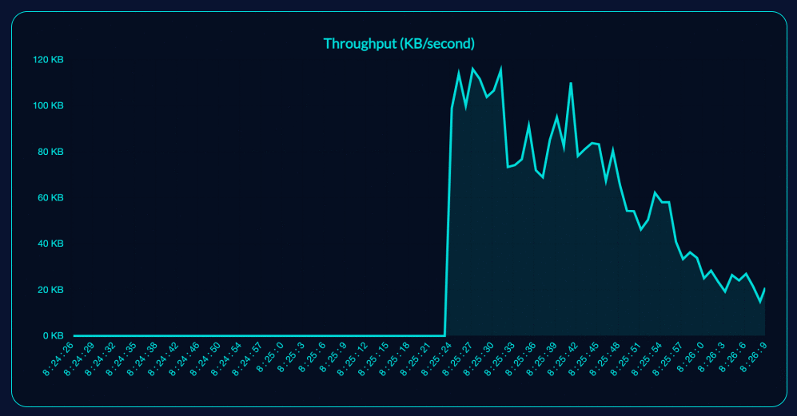

Table of Contents
Overview
Demo
Quick Start
Viewing your metrics
Open-Source Kafka simulator tool
Overview
- Monitor your Kafka application in real-time
- Track throughput, events per second
- Easily integrate KafkaMirror to your existing application
- Compatible with Kafka applications utilizing KafkaJS
KafkaMirror allows for easy, highly accurate monitoring of your kafka cluster in real-time. By directly accessing the log data for your kafka cluster, KafkaMirror delivers precise, reliable feedback which can be used to improve system health and identify irregularities.
Demo


Quick Start
A few simple steps to initialize KafkaMirror:
npm install kafka-mirror-connect- In the file where you initialize your KafkaJS to connect with your Kafka Cluster, require in kafka-mirror connect.

- Replace new Kafka with a call to KafkaMirror.

Viewing your metrics
The KafkaMirror GUI can be used to view your metrics.
- Clone this repo (https://github.com/oslabs-beta/KafkaMirror.git)
- cd into KafkaMirror
- Start the application with npm run build
- Navigate to localhost:3000
- Within the GUI, navigate to the setting page and enter the location (e.g. port 9092) of your Kafka cluster.
Open source Kafka simulator
- https://github.com/oslabs-beta/kafka-simulator
- preconfigured to work with KafkaMirror
The KafkaMirror GUI can be used to view your metrics.
Authors
KafkaMirror Engineers:
Joe Kinney
Jonah Stewart
Keon Kim
Mark Miller
Toby Rhodes